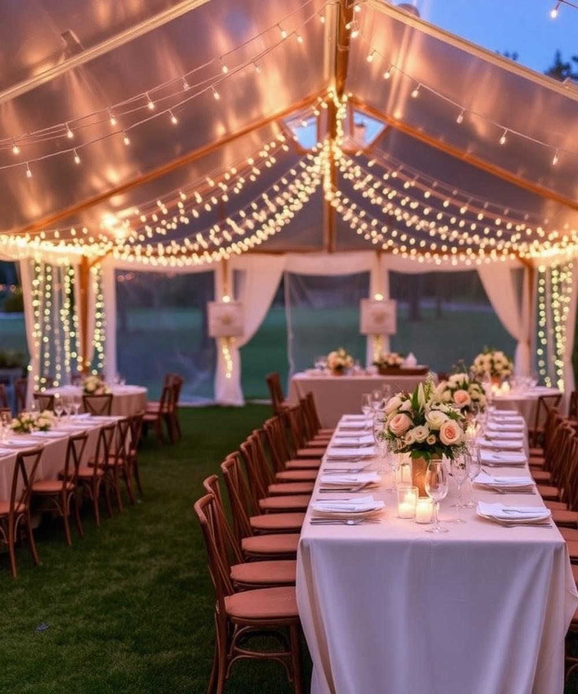
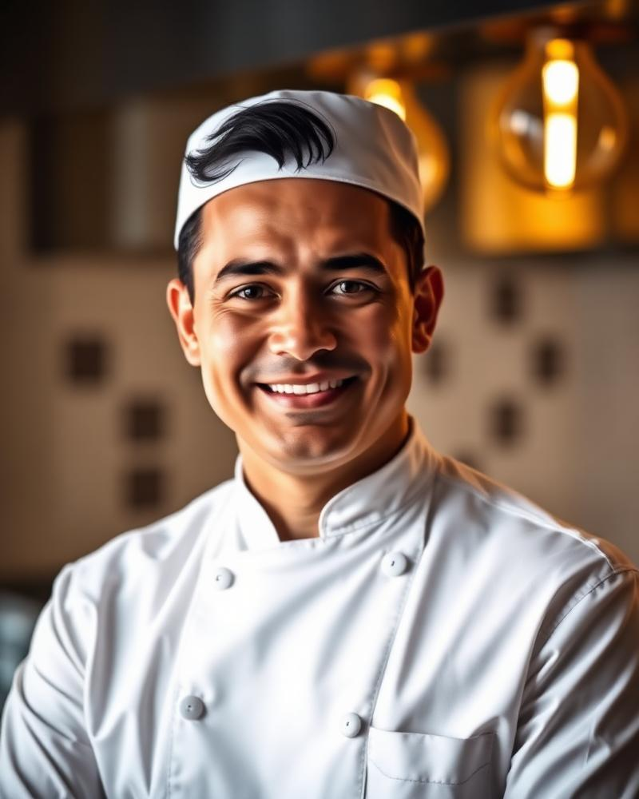
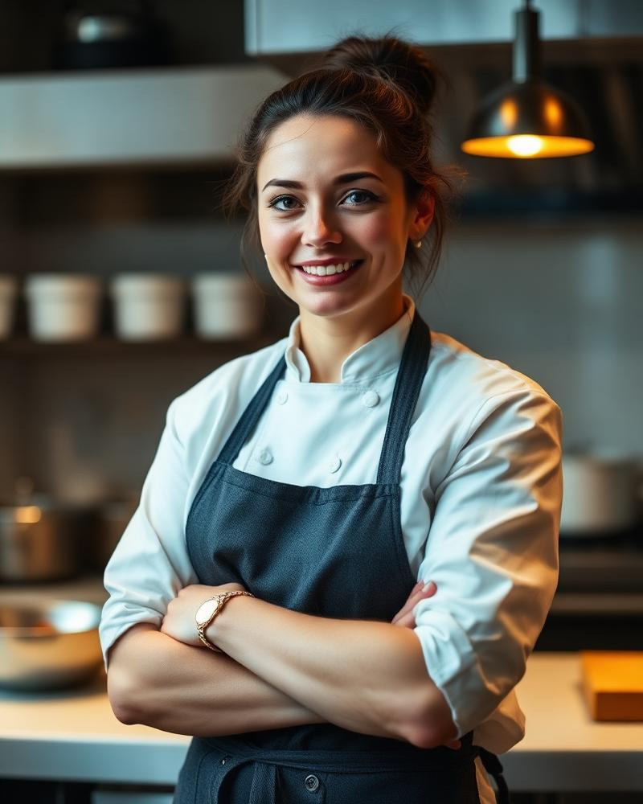
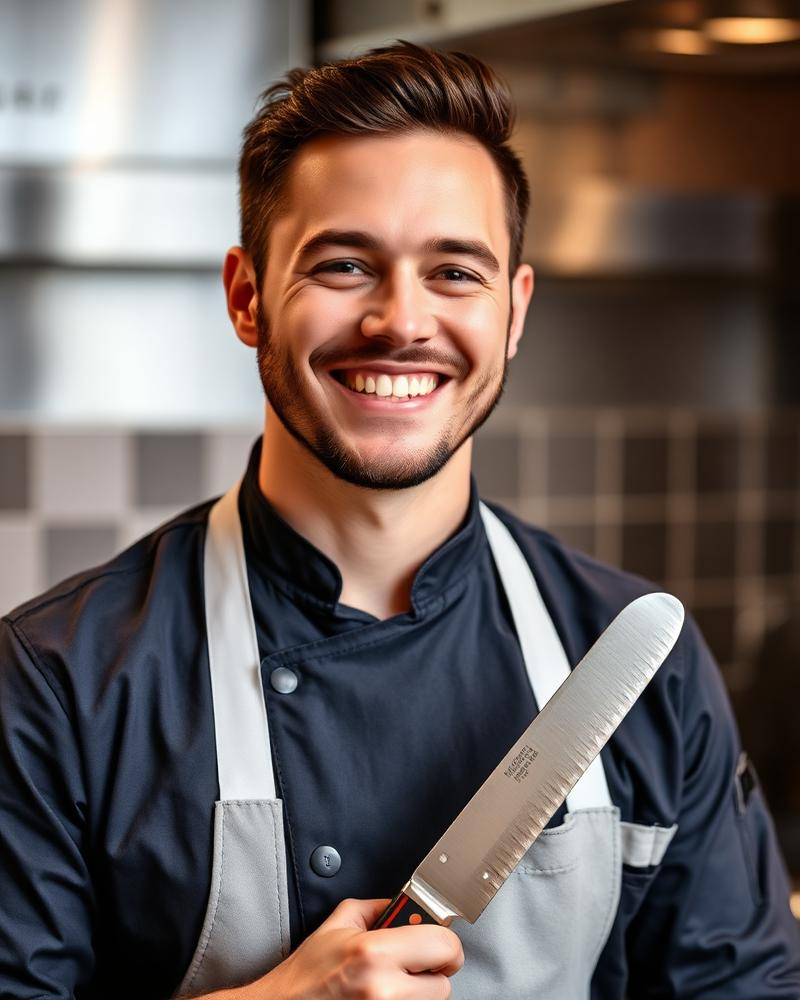
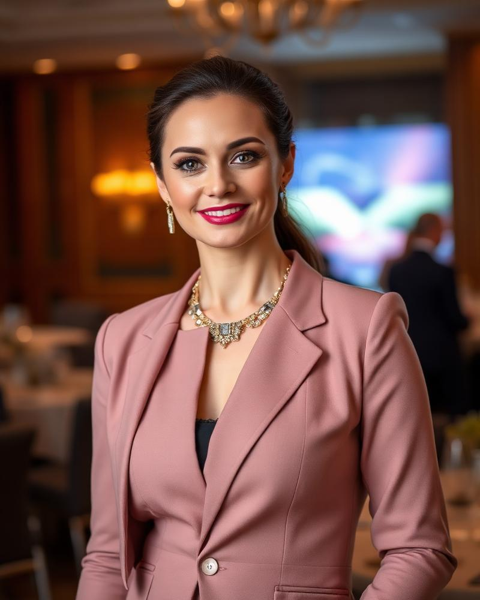

FeastCraft was born from a simple belief: extraordinary food, thoughtfully served, transforms an occasion into a memory.

In 2008 chef Marco Alaric started FeastCraft in a converted brownstone kitchen. Today, our brigade of 45 chefs and 120 service professionals delivers more than 1,200 events every year across the country.
What has never changed: we handcraft every menu, we source seasonally, and we treat every event as if it were our own.
To make every guest feel considered — from the first canapé to the final dessert.
To be the most trusted name in bespoke event catering.




FeastCraft founded in a Brooklyn brownstone kitchen.
First 500-guest wedding. Team grows to 12 chefs.
Launch of Live Counter division & corporate catering line.
James Beard nomination & 1,000-event milestone.
Opening our second production kitchen in Long Island City.
2023 Nominee
NY Weddings 2024
Editorial · 2023
Forbes 2025